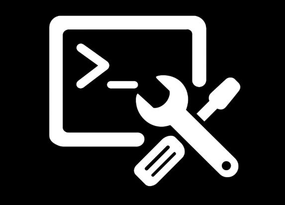

Pada artikel ini, aku membahas cara menyalin berkas dari server ssh Termux ke klien PC Windows 10 menggunakan scp dan rsync, namun kendala jaringan “terputus” masih sering terjadi.
Setelah “berkonsultasi” dengan deepseek, akhirnya aku memperoleh script bash yang bisa secara otomatis menjalankan kembali script rsync tadi hingga file tersalin dengan lengkap.
Langkah-langkahnya :
- Buat akses ke ssh tanpa password dengan
ssh key. - Caranya : pada Cygwin (PC Klien) ketikkan
ssh-keygen -t ed25519. Tekan enter (tanpa password) sampai selesai. - Ketik
ssh-copy-id -p 8022 [id_user]@[ip_server_ssh]. Jadi (misal) :ssh-copy-id -p 8022 u0_123@11.222.333.44. - Coba ketik
ssh -p 8022 u0_123@11.222.333.44. Jika berhasil masuk ke server, berarti klien sudah siap. - Save as …[dot]sh script berikut :
#!/bin/bash
# --- Nilai default (boleh diubah) ---
DEFAULT_USER="u0_a123"
DEFAULT_IP="10.11.12.123"
DEFAULT_PORT="8022"
DEFAULT_REMOTE_DIR="/data/data/com.termux/files/home/storage/shared/Download"
DEFAULT_DEST="/cygdrive/d/images"
DEFAULT_EXT=".jpg"
RETRY_DELAY=5
echo "=== Sinkronisasi JPG dari Termux ke Lokal ==="
echo
# --- Input dari user (Enter = pakai default) ---
read -r -p "User SSH [$DEFAULT_USER]: " USER_IN
USER_IN="${USER_IN:-$DEFAULT_USER}"
read -r -p "Alamat IP/Host [$DEFAULT_IP]: " IP_IN
IP_IN="${IP_IN:-$DEFAULT_IP}"
read -r -p "Port SSH [$DEFAULT_PORT]: " PORT_IN
PORT_IN="${PORT_IN:-$DEFAULT_PORT}"
read -r -p "Folder remote [$DEFAULT_REMOTE_DIR]: " RDIR_IN
RDIR_IN="${RDIR_IN:-$DEFAULT_REMOTE_DIR}"
read -r -p "Folder lokal [$DEFAULT_DEST]: " DEST_IN
DEST_IN="${DEST_IN:-$DEFAULT_DEST}"
read -r -p "Ekstensi (misal :*.jpg) [$DEFAULT_EXT]: " EXT_IN
EXT_IN="${EXT_IN:-$DEFAULT_EXT}"
# --- Susun variabel ---
SOURCE="${USER_IN}@${IP_IN}:${RDIR_IN}/${EXT_IN}"
SSH_OPTIONS="ssh -p ${PORT_IN} -o ServerAliveInterval=15 -o ServerAliveCountMax=3"
echo
echo "Sumber : $SOURCE"
echo "Tujuan : $DEST_IN"
echo "Port : $PORT_IN"
echo
read -r -p "Lanjutkan? [Y/n]: " CONFIRM
case "$CONFIRM" in
[nN]*) echo "Dibatalkan."; exit 1 ;;
esac
# --- Loop retry ---
echo "Memulai sinkronisasi musik..."
while true; do
rsync -avzP -e "$SSH_OPTIONS" "$SOURCE" "$DEST_IN"
if [ $? -eq 0 ]; then
echo "Sinkronisasi berhasil diselesaikan!"
break
else
echo "Koneksi terputus atau error. Mencoba lagi dalam ${RETRY_DELAY} detik..."
sleep "$RETRY_DELAY"
fi
done
Sesuaikan dengan keperluan dan kemudian jalankan melalui Cygwin. Semoga berhasil.